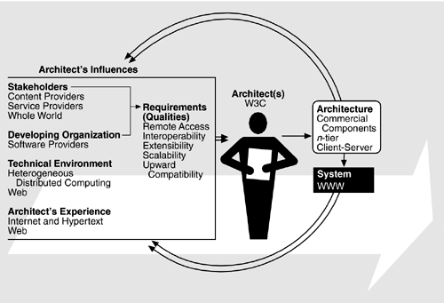

| [ Team LiB ] |
|
13.6 The Architecture Business Cycle TodayIf we look at the current state of the Web after several cycles through the ABC, we see a number of phenomena.
Figure 13.8 shows the ABC for the Web today. Figure 13.8. The current ABC for the Web The customers are the software server and browser providers and the service and content providers. The end users are the people of the world. The architect's role is provided by the W3C and other consortia such as UDDI, the Apache project, and several influential companies—Sun, Microsoft, and AOL/Netscape. The remainder of the ABC is the same except that the technical environment now includes the Web itself, which adds an upward compatibility requirement to the qualities. We discussed the return cycle of the ABC in Section 1.1. The existence of a system creates new business opportunities for both the developing organization and its customers. In the World Wide Web case, the developing organization, CERN, decided that nuclear research, not Web activity, was its main business, so the business opportunities created by the return loop of the ABC were filled by other organizations. |
| [ Team LiB ] |
|